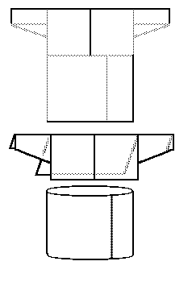

This is not a medieval archaeological pattern, but a much later folk design for a shirt from Halliste, Estonia (Estland).
Go to Tunic Page
Some Clothing of the Middle Ages, by I. Marc Carlson, Copyright 1997 This code is given for the free exchange of information, provided the Author's Name is included in all future revisions, and no money change hands-